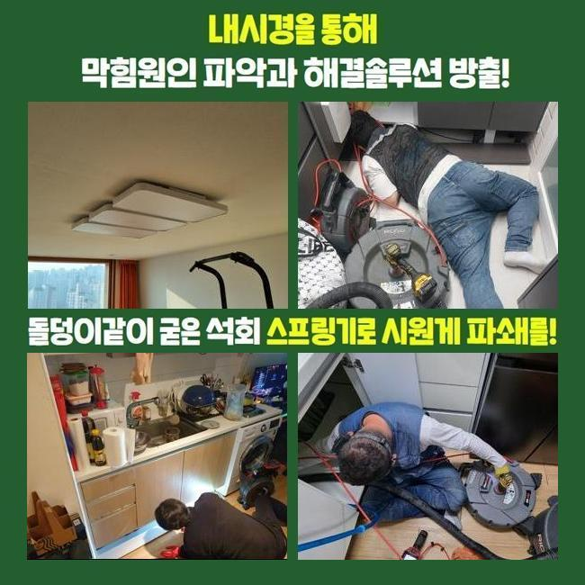
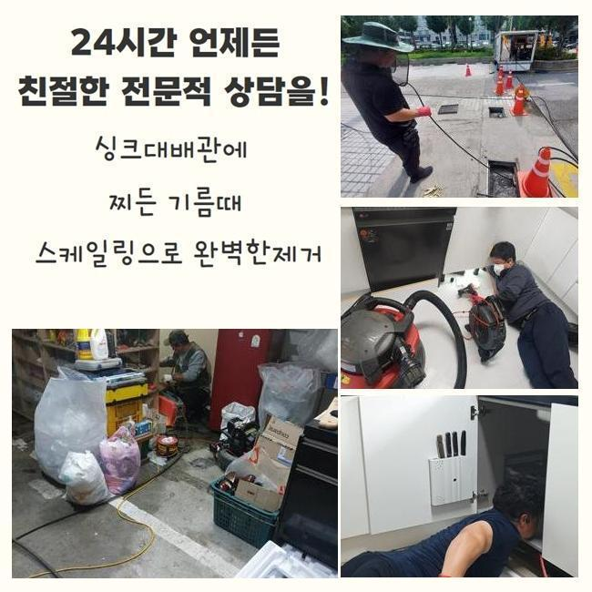
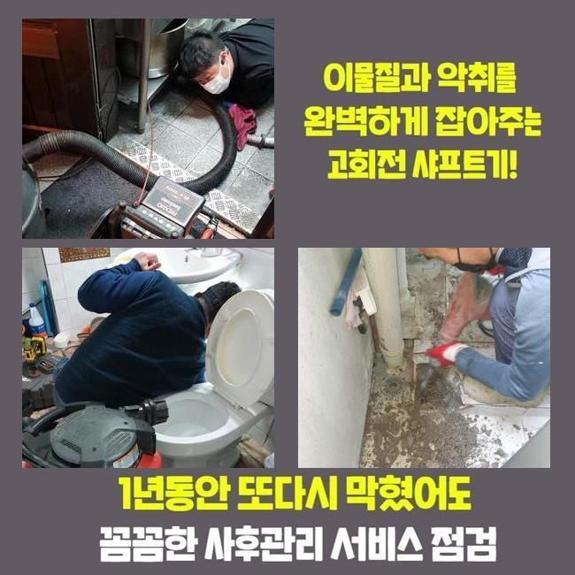
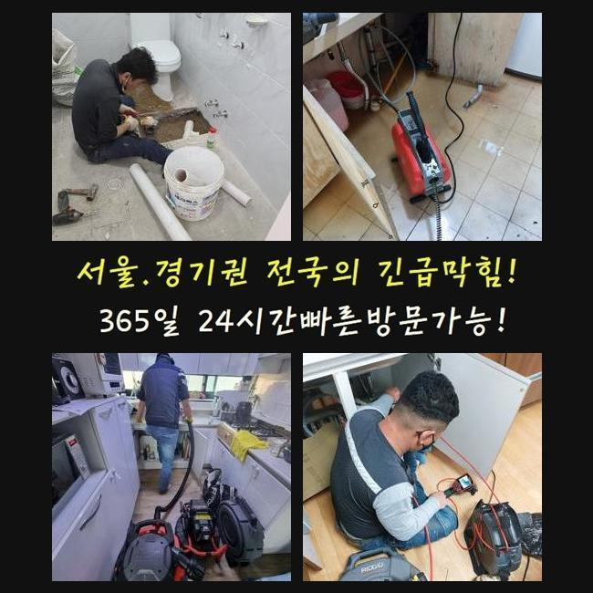
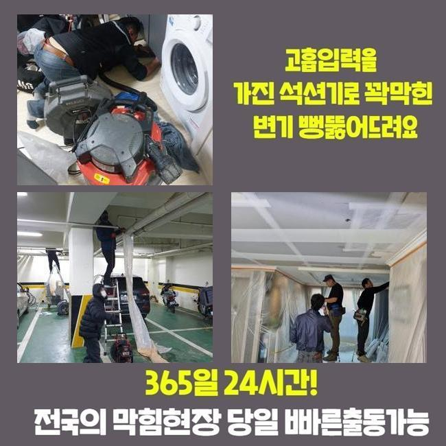
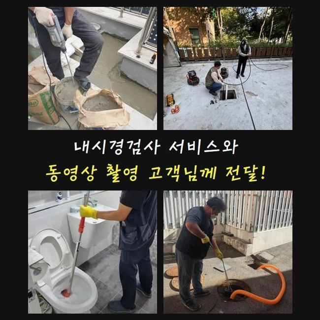
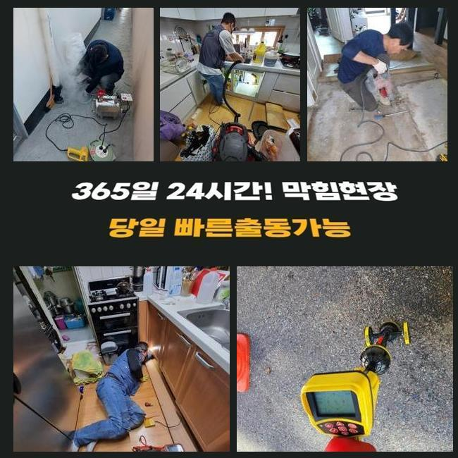

🏠 아산 법곡동씽크대뚫음 영인면 집수정청소 배관전문
아산 법곡동 싱크대막힘 전문 시공 후기

📋 작업 개요
- 위치: 아산 법곡동, 법곡동, 아산
- 서비스 유형: 싱크대막힘, 하수구막힘, 배관막힘, 집수정막힘, 역류해결, 뚫는업체, 배관청소, 고압세척, 설비공사, 배관보수
- 작업 일시: 2025. 6. 1. 23:28
- 업체명: 하수구수사대 (010-5615-2118)
🔍 문제 상황
금번에 하수배관 막힘을 처리하기 위해 저희 팀이 방문한 곳은 화장실 배수구 막힘이 된 오피스텔이었어요
의뢰인께서는 모발 뭉텅이가 많이 걸려있어 역류하는 듯 하다고 생각하고 있었습니다
의뢰인은 그전부터 물 빠짐이 느려지면서 물이 고이는 문제로 신경이 쓰였다고 합니다
긴 머리칼을 가진 고객님인데 샤워를 할때마다 다량의 모발이 하수관으로 흘러간 것 같다고 말씀하셨어요
아산 법곡동씽크대뚫음 영인면 집수정청소 배관전문
통상시 버릇이나 증세들을 말해주면 저희 전문가가 화장실 막힘을 처리하는 방법을 찾는 데 커다란 보탬이 됩니다
사소한 정보도 엄청난 차이를 나타내게 되거든요
하수관 막힘을 뚫어내는 저희 전문가는 도착한 뒤 본격적으로 작업을 착수하기 전에 수채 커버를 열고 하수관 안쪽 상태를 점검해보기로 했어요
의뢰인이 이야기하신 것처럼 입구쪽부터 눈에 띄는 모발 뭉치가 배관을 막고 있었구요
석회 성분도 드러난데다가 배수구 냄새 역시 매우 심했어요
입구쪽과 인접한 구역부터 이러한 이물질이 빼곡히 쌓여 있어서 한번에 도구를 삽입하기가 힘들어보이는 현장이었습니다

🔎 원인 분석
💡 전문가 진단: 정밀 진단 장비를 사용하여 슬러지의 고착 여부를 판명하고 타격/세척 작업을 실시했습니다.
그 때문에 하수배관 막힘을 확실히 뚫는 저희 기술자는 첫 단계로 초입 부분의 오물을 청소하기 위해 석회성분을 유하게 만드는 특수 약제를 이용해 보기로 하였습니다
석회덩어리는 강하게 고착되어 있으면 기구를 집어 넣기도 쉽지 않아서 약품으로 말랑말랑하게 만들어지게끔 합니다
특수 약제를 부은 후 석회질 상태를 점검했습니다
약물이 흘러가니 안쪽에서 공기방울이 보글보글 발생했어요
20분 쯤 시간이 지난 후 오물을 건드려보니 지금은 충분히 부드러운 형질로 변했는데요
다만 내부에는 아직까지도 세세한 성분과 고인 하수도 보였습니다
이 같은 상황이라 흡입기를 일단 활용해 보기로 하였어요
흡입기구는 물이든 이물질이든 상관없이 함께 빨아들일 수 있는 기기인데요
기기를 움직이면서 물과 오염물을 흡입하였습니다
그럼에도 욕실 하수관에서 확산되는 지독한 냄새는 흡입작업을 마쳐도 이어졌어요
그렇기에 다시 한번 특수 도구를 활용하여 하수관로를 정상상태로 되돌리기로 했습니다
첫째로 더 안쪽 상태를 살펴보기 위해 배관 전용 내시경을 진입시켰어요

🔧 작업 과정
배관 초반에도 석회덩어리가 많이 있었지만 아래로 내려갈수록 가득히 쌓여있었어요
사실상 이러한 석회성분은 수도를 사용하다 보면 어느 곳에서나 일어날 수 있는 현상이에요
그렇기 때문에 하수 배출이 원활하지 않는다고 느껴지면 하수배관 막힘상황을 해소하는 전문 수리공에게 검사를 받는 것이 권장됩니다
배관 막힘은 통로를 뚫는 공사를 하면 개선될 것이라고 판단하기 쉽지만 특정 경우에서는 모든 하수관을 바꿔야 하는 상황에 직면할 수 있습니다
이런 상태가 되면 시간적 경제적부담이 굉장히 많이 들어갈 수 밖에 없으니 초기단계에서 이상이 포착되었을 때 즉각 보수를 실시하는 것이 도움이 됩니다
처음에 하수관 냄새 제거를 진행한다거나 오염물을 빼내면 큰 시공을 피할 수 있고 전체적으로 보면 배관 사용기한도 연장 가능하므로 권유하는 방법입니다
이런 경우에는 플렉스 샤프트 장치를 활용하여 막힘을 없애는데 이 방식으로도 없어지지 않는 수준으로 견고하게 굳어버린 석회덩이는 차근차근 파쇄하는 과정을 거쳐야만 합니다
석회덩어리와 기름 덩어리를 조그맣게 분해한 뒤에는 흡입기구와 같은 고성능 도구를 사용하여 오물들을 완벽하게 배관 외부로 제거합니다
배수관 청소는 간단히 단숨에 종결할 수 있는 일이 아니에요
배관 속에 쌓여있는 이물들이 일시에 같이 수리되지 않기 때문이에요
막힌 곳을 뚫어주고 말끔한 배관 속 환경으로 만들기 위해서는 위의 작업 단계를 수 차례 되풀이해야합니다
세척과정 틈틈이 무조건 배수구 배수구 내시경은 활용하여 파이프 안의 상황을 살펴 봐야하죠
또한 추가 작업이 요구되는지 살펴보고 일을 이어가야만 수리 퀄리티를 높이며 막힘상황을 본질적으로 개선시킬 수 있습니다
내시경기기로 중간 확인을 실시해보니 하수구 내부에는 아직까지도 석회물질과 온갖 기름잔재들이 잔류하고 있었죠
오랜 기간 고착된 불순물을 해결하려면 세밀함과 노하우가 필요해요
욕실 하수관 냄새를 처리하는 저희 수리팀은 그냥 배수장애를 처리하는 것 뿐만 아니라 반복될 위험성까지 생각하여 완벽한 세척 작업을 시행하고 있습니다
의뢰인에게도 하수구 속이 명확히 좋아지는 것을 내시경 모니터로 확인하게 해드렸어요
세척하는 동안 하수관로에서 청소된 석회물질과 머리카락 뭉치는 상황의 심각성을 오롯이 드러냈습니다
하수구 망이 본연의 역할을 하지 못하면서 두발을 꼼꼼히 거르지 못한 것이 막힘의 주된 이유였습니다


✅ 작업 완료
따라서 저희 전문가는 보다 정교한 트렌치로 교체를 실행했어요
새 하수구 필터는 더 자그마한 불순물도 솎아낼 수 있도록 만들어졌기에 지금부터는 동일 사태가 일어나지 않도록 막을 수 있어요
끝으로 물흐름 진단을 실행했어요
물이 하수구를 통하여 자연스럽게 배수되는 것을 살펴볼 수 있었습니다
하수관 세척이 별거아닌 일처럼 보일지도 모르지만 청소를 통해 일상속에서 불편함이 해소되고 편안함이 회복되는 환경을 보면 이 작업의 소중함을 또 다시 느끼게 됩니다




⚠️ 주방 싱크대 배관 막힘 예방 수칙
- ✅ 기름기가 묻은 식기나 프라이팬은 설거지 전 키친타올로 반드시 기름때를 닦아내세요.
- ✅ 주기적으로 싱크대 개수대에 뜨거운 물을 가득 받아 한 번에 내려 배관 내부 기름을 씻어내세요.
- ✅ 배수구 거름망을 미세한 필터로 사용하시고 음식물 찌꺼기가 틈으로 새어 들지 않게 관리하세요.
- ✅ 베이킹소다와 식초를 뜨거운 물과 함께 일주일에 한 번씩 부어주면 배관 살균과 막힘 예방에 좋습니다.
💡 핵심 정리
- 확실한 장비 작업(내시경 점검 및 샤프트 스케일링)으로 원인을 뿌리 뽑습니다.
- 작업 후 1년 이내에 동일한 부위 재발 시 100% 무상 A/S 서비스를 보장합니다.
- 서울 · 경기 · 인천 전 지역에 24시간 언제든 긴급 출동할 수 있도록 항시 대기 중입니다.
❓ 자주 묻는 질문 (FAQ)
🚨 아산 법곡동 싱크대막힘 문제로 고민이신가요?
정확한 원인 진단과 확실한 시공으로 재발 없는 해결을 약속드립니다.
24시간 긴급 출동 | 서울 · 경기 · 인천 전지역 | 1년 내 재발 시 무상 A/S